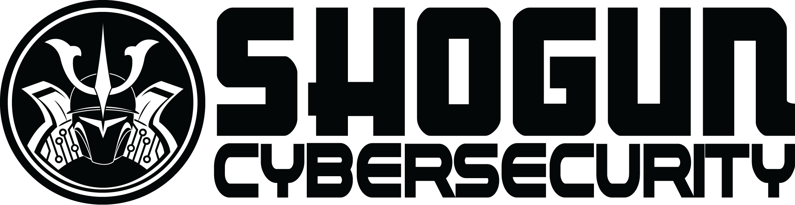

:office: 49 Chetwynd St, North Melbourne, Vic, 3051
:flags: Australian owned :flags: Private company
:small_blue_diamond: Visit site
Shogun Cybersecurity is an independent, Melbourne based consultancy founded in 2015 by consummate problem solver and outspoken industry personality, Corch. We work with organisations of all sizes, but are best known for our focus on supporting small and mid-sized clients, including not-for-profits, professional associations, and scale-ups. We also love to partner with other service providers including law firms, IT services, system integrators, and even other cybersecurity service providers, to both augment their own capabilities and deliver shared services and solutions to mutual clients.
With broad experience across industry verticals and cybersecurity practice areas, Shogun Cybersecurity advises clients on all manner of cybersecurity issues and problems, and offers professional services on a wide range of technologies, platforms, and solutions:
Not every organisation can justify their own CISO, but every organisation needs strong cybersecurity leadership. Our Virtual CISO service provides business leaders direct, on demand access to expert cybersecurity advice, as well and on going support with cybersecurity strategic planning and execution, all for a fixed monthly fee. For clients with less demanding needs, we offer one-off and consultations and ad-hoc advice for reasonable hourly rates.
The line between IT MSP and MSSP is rapidly disappearing, with many MSPs having to play catch up to stay competitive with established MSSPs. Whether you need help building out your own cybersecurity service delivery capabilities, an experienced hand to deploy and integrate new tools into your operations, or just need a specialist to call on for those sticky questions your customers love to ask, we are here to help your business grow and succeed in this highly competitive market.
You can’t plan for the future without knowing where you are now. Our extensive experience bridging the worlds of business, technology, and security, combined with the objective perspective that only a independent assessor can provide, enables us to give our clients the insight and advice they need to make good decisions about how to protect their business from the threats that are relevant to them. Whether it’s a security architecture assessment of for a new project, a third party risk assessments for a new supplier, measurement against a common standard like NIST CSF, or just a general security posture assessment, we have the skills and experience to ensure you get an accurate understanding of your current situation.
Establishing internal capability in cybersecurity can be challenging even for organisations with mature IT environments and operational practices, because there’s no one-size-fits-all approach when it comes to cybersecurity. We help our clients establish and execute security programs that deliver the capabilities and outcomes they need by identifying and aligning with specific business requirements and strategic objectives.
Cybersecurity is a broad problem space, and it takes an equally broad set to skills and experiences to manage it properly. If there’s one thing we pride ourselves on at Shogun Cybersecurity though, it’s solving problems, no matter how tricky or esoteric.